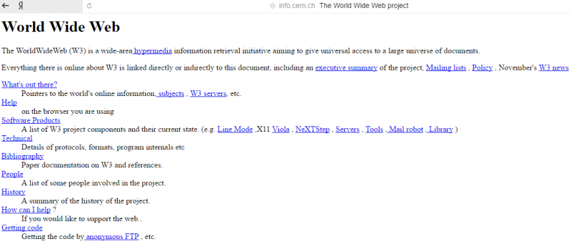

The History Of The Development of HTML
A Brief Prehistory
For a long time, practically until the dawn of civilization (the 1970's) there was no Internet. At all.
With the advent of computers, there appeared a desire and need to connect them in one form or another, and four major American colleges took on this task. Approximately seven years passed between the creation of the concept and the historical moment:
October 29, 1969 - On this day, a communication session was held between the two first nodes of the ARPANET network, one node located at UCLA and one at the Stanford Research Institute, 640 kilometers away. A scientist from Los Angeles successfully remotely connected to a computer in Stanford. His colleague in Stanford observed the appearance of symbols entered at a distance on the screen and confirmed the transfer of each letter by phone. Then and there began the era of computer networks.
For a long time, the Internet was designated for specialists only and served mainly for the exchange of technical documentation and emails. That’s why ordinary users had nothing to do there. It was only in the early 90's when the “Internet to the people!” revolution happened 🙂.
A Brief Prehistory
British scientist Timothy John Berners-Lee at CERN in Geneva invented the co-called Hypertext Markup Language, also known as HTML, which was designed for marking and formatting World Wide Web documents.

Almost forgot! Sir Tim also developed the global hypertext project (you know it as the World Wide Web). In fact, HTML was born while he was working on this project.
HTML language
HTML is a successor of SGML, but it was created so that normal people could use it and not just specialists i.e. since its first days, HTML has had the following advantages:
- Simplicity, which was achieved by means of a small set of structural elements called descriptors (also known as tags). All tags are written in angle brackets, for example <img> and convey some meaning.
- The ability to format a document without reference to means of display (such as a computer monitor or the screen of a phone)
As you may have already guessed, the world’s first website was created by Tim Berners-Lee 🙂 We don’t know the exact date of HTML creation, since it was a long term project, but the birthdate of the first website is known: August 6, 1991. By the way, it can be seen even today, though it's in an archive form.
I believe that all web developers can rightfully consider this date as their professional holiday 🙂.
How do you like this page? 🙂 I guess that most of you don't want to read it, let alone stay on it for long. The developers also understood that it was only the beginning:
June 1993 - HTML 1.2
This version had more than 40 tags, and 3 of them already hinted at some kind of visual formatting of documents (for example, bold italics). The rest of the tags served exclusively for logical markup.
1994 - The Foundation of W3C
Tim Berners-Lee founded the World Wide Web Consortium (W3C). The W3C’s mission was and remains as follows:
That was one of the best Pizzas I have ever eaten in my life. The cheese was so good it made me faint.
The great merit of these fellas is that HTML was released with one basic set of tags and attributes and eventually web pages became as we know them today. Just imagine: in the mid 90's, several major software developers were planning to release their own versions of HTML with their own tag names. What a mess the field of web development could have been! For example, an ad for a job might have read: “Looking for a webpage designer for Mozilla FirefoxEdge”, “In urgent need of a designer for Edge”, “Looking for a designer for Kindle" In short, thank you, W3C 🙂.
September 22, 1995 - Version 2.0
The process of developing and approving the new version was very unhurried and the sole noticeable improvements in this version were:
- Queries: such as keyword search
- Forms for data transfer from computer to server: for example, to enter a birthdate or to choose one of several options in a poll
March 1995 – The Beginning of Work on HTML 3.0
The first version of the standard included a lot of interesting things:
- tags for tables creating
- Layout of math formulas
- text wrap, etc.
The creators suddenly realized that, according to their own idea, HTML should only mark the structure of documents and shouldn’t contain any settings of graphic styles for the depiction of elements in the browser.
During the creation of HTML 3.0, the developers scratched their heads over the question how to solve the inconsistency between the ideology of structural formatting and the needs of the users, who were much more interested in the look of web pages.
In order to overcome this inconsistency and still keep the initial properties of HTML, the creators of the third version of HTML decided to include support for a new facility which would serve to format web pages’ design.
December 17, 1996 – CSS
CSS (Cascading Style Sheets) is the style sheets that can be attached to an HTML document and serve for the visual design of various parts of documents.
So, the CSS system:
- is formally independent of HTML
- has its own syntax, which is different than HTML's
- isn’t affected by the ideological restrictions of HTML
- allows the setting of parameters of external view for any HTML tag
With the help of CSS, the creators of web pages could, at last, easily change the font and size of anything they wanted and, importantly, the developers created a mechanism that affected the interpretation of existing HTML tags and didn't require introducing a lot of new tags.
To demonstrate the wonders of CSS, Canadian Dave Shea created CCS Zen Garden, a place where hundreds of web developers meditate and design the same HTML page in completely different CSS styles.
The Impact of Microsoft
Meanwhile, in a galaxy far, far away…Microsoft noticed the meteoric rise in sales of Netscape’s Navigator browser and of course couldn’t stand idly by. Microsoft slightly reworked the Mosaic browser and started to release their Explorers, which at the start weren’t well-loved by users (well, not only at the start ;)).
The third version of Internet Explorer was created in August 1996. At the time, the browser offered significant innovations and became popular. As result, the market was divided between Netscape Communications and Microsoft.
And at the same time, Microsoft took the W3C under its wing.
January 14, 1997 – HTML 3.2
Version 3.2 was released a month after the approval of CSS and was already full adapted to interact with style sheets.
Many innovations from version 3.0 were dropped, and developers instead added some unusual elements, which were supported by Netscape Navigator and Internet Explorer 3.
December 18, 1997 – HTML 4.0
In this version, they cleaned up many of the elements from the previous versions. Many tags were marked as outdated and not recommended for use. Instead, it was necessary to use CSS style sheets.
The new version included support for frames, scripts, and general procedures of object embedding. Also, it improve tables and forms, which in addition to other advantages, provided greater accessibility for physically handicapped people.
HTML 4 was developed with the help of experts in the field of internationalization. Therefore, it became possible to write documents in any language and easily send them all over the world.
December 24, 1999 – HTML 4.01
In this version, they slightly tweaked objects, forms, and images, fixed some bugs, and created a generally more stable version, which would be used by web developers for more than 10 years.
The Working Group WHATWG
2004: Swiss programmer Ian Hickson (at the time a developer for Opera) and several representatives of companies such as Mozilla, Google, and Apple, founded a working group called WHATWG (The Web Hypertext Application Technology Working Group).
The reason for the creation of this community was the fact that the W3C, at the time, had lost interest in HTML and was instead working on the development of XML, and on this foundation, the development of the extensible hypertext markup language XHTML. We will not go into the details, because this language has ceased to evolve.
For two years, both the W3C and the WHATWG worked on their own projects. It later became clear that the WHATWG had achieved some results, though XHTML 2 was never implemented.
In 2006, Tim Berners-Lee announced that the W3C and the WHATWG would work together on the further development of HTML.
October 28, 2014 – HTML5
On this day, the W3C started recommending the use of HTML5.
- The new version made the syntax stricter, compared to previous versions
- Support for multimedia technologies was improved
- Some outdated tags were removed
- They paid more attention to support of the scripts, such as javascript
On Nov. 1, 2016, the W3C started recommending the use of HTML 5.1.
And the development of HTML continues…